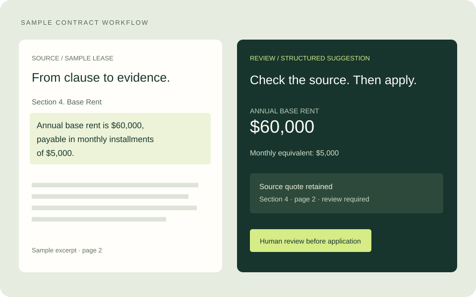

PRIVATE IMPLEMENTATION
AI Contract & Transaction Analysis
Turn lengthy leases and agreements into reviewable comparisons and structured transaction information—with source evidence kept close.

Evidence before action
Built contract-comparison and transaction-extraction workflows that preserve source quotations and page references. Added checks on quoted text, separate handling of conflicting suggestions, and review before applying values.
Designed for imperfect conditions
Implemented resumable extraction and recovery paths for provider failures. Tested late-document change detection using a 52-page lease and a synthetic amendment.
Part of the CapStar platform. Automated tests do not establish legal accuracy; source documents and AI suggestions require human review.